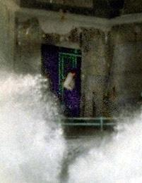

Adult Sunday SchoolMarch 11, 2012
The Kingdom of Heaven
Psalm 115:3
Ps 115:3 But our God is in the heavens: he hath done whatsoever he hath pleased.
Ps 135:6 Whatsoever the LORD pleased, that did he in heaven, and in earth, in the seas, and all deep places.
Da 4:35 And all the inhabitants of the earth are reputed as nothing: and he doeth according to his will in the army of heaven, and among the inhabitants of the earth: and none can stay his hand, or say unto him, What doest thou?
Mat.10:7 And as ye go, preach, saying, The kingdom of heaven is at hand.
8 Heal the sick, cleanse the lepers, raise the dead, cast out devils: freely ye have received, freely give.
Mat. 11:12 And from the days of John the Baptist until now the kingdom of heaven suffereth violence, and the violent take it by force.
Luke 16:16 The law and the prophets were until John: since that time the kingdom of God is preached, and every man presseth into it.
Inexpressible earnestness, no pride or arrogance.
John 6:15 ¶ When Jesus therefore perceived that they would come and take him by force, to make him a king, he departed again into a mountain himself alone.
.
John 10:1 Verily, verily, I say unto you, He that entereth not by the door into the sheepfold, but climbeth up some other way, the same is a thief and a robber.
8 All that ever came before me are thieves and robbers: but the sheep did not hear them.
John 10:12 But he that is an hireling, and not the shepherd, whose own the sheep are not, seeth the wolf coming, and leaveth the sheep, and fleeth: and the wolf catcheth them, and scattereth the sheep.
13 The hireling fleeth, because he is an hireling, and careth not for the sheep.
A false shepherd has not the love and mercy of God
“a love” LUST but not true Love. To all the strangers, Jesus gives the names; thieves and robbers.
Not pride or arrogance; Take a city or kingdom by storm-rush into it? NO simply obey.
From the time when John began preaching, men of violence were trying to force their way into the kingdom. It is compared to a walled city that men try to storm and enter. They tried a little later to make Jesus a king by force.
These difficult words of Jesus mean that the preaching of John "had led to a violent and impetuous thronging to gather round Jesus and his disciples"
Can we recover from a lack of knowledge?
Can we recover from lack of fervency?
There is no such thing as winning this kingdom by force, ignorance or half-hearted endeavors.
the strait gate. Oh that we could see more Glory and holiness in the church of God. Is. 48:1
Jesus’ Glory, and honor, and the bride’s success.
The gates of Christ's kingdom are open. (Rev. 3:8)
(Ac 2:22-36), but men hearing it was open sought to enter immaturely, not by the gate which God would open.
Use the keys of the Kingdom (Mt 16:19)
Jn 6:15; 6:63; Mt 20:21; Lu 17:20; 21;19:11,36-38,46; 22:24-30; Ac 1:1-6:15; I Cor. 13:1-13
The people were full of preconceived ideas with regard to the kingdom, and each one sought to hasten and enjoy its pleasures as one who:
Impatiently seizes upon a bud and seeks with his fingers to force it to bloom.
The context shows that John the Baptist was even then seeking to force the kingdom. Mat. 11:3
Php 2:13 For it is God which worketh in you both to will and to do of his good pleasure.
Heb 13:21 Make you perfect in every good work to do his will, working in you that which is wellpleasing in his sight, through Jesus Christ; to whom be glory for ever and ever. Amen.
Mt 17:5 While he yet spake, behold, a bright cloud overshadowed them: and behold a voice out of the cloud, which said, This is my beloved Son, in whom I am well pleased; hear ye him.
Acts 14:22 Confirming the souls of the disciples, and exhorting them to continue in the faith, and that we must through much tribulation enter into the kingdom of God.
James 2:5 Hearken, my beloved brethren, Hath not God chosen the poor of this world rich in faith, and heirs of the kingdom which he hath promised to them that love him?
You won’t force your way into the Kingdom of God but deny yourself daily working out what God works in. Hear what the Spirit has to say to the churches.
There is an Intellectual deficit There is a character deficit There is a moral deficit bankrupt-shipwrecked-gone under-sunk There is a crises (backslid)
We can only recover if we recover by faith, as we will to recover (will to do His will)
It is the Will of God that you Love as he loves them. Will to Love
Can we cover for them?
Pr 10:12—Hatred stirreth up strifes: but love covereth all sins. 16:28—A froward man soweth strife: and a whisperer separateth chief friends. 17:9—He that covereth a transgression seeketh love; but he that repeateth a matter separateth very friends. 26:21—As coals are to burning coals, and wood to fire; so is a contentious man to kindle strife.
Col 3:14—And above all these things put on charity, which is the bond of perfectness. 1Tim. 1:5—Now the end of the commandment is charity out of a pure heart, and of a good conscience, and of faith unfeigned:
1Peter 4:8—And above all things have fervent charity among yourselves: for charity shall cover the multitude of sins.
Can we convert them?
James 5:20—Let him know, that he which converteth the sinner from the error of his way shall save a soul from death, and shall hide a multitude of sins. Rom 11:14—If by any means I may provoke to emulation them which are my flesh, and might save some of them
All were reprobate, or rejected; however, the apostle believed according to promise that all were recoverable. None of them were irrecoverably shut out from the Divine favour; and that some of them, by his preaching, might be disposed to receive salvation by Christ Jesus.
Mt 7:14 Because strait is the gate, and narrow is the way, which leadeth unto life, and few there be that find it.
Php 3:14 I press toward the mark for the prize of the high calling of God in Christ Jesus.
Mt 10:1 ¶ And when he had called unto him his twelve disciples, he gave them power against unclean spirits, to cast them out, and to heal all manner of sickness and all manner of disease
Heb 13:18 Pray for us: for we trust we have a good conscience, in all things willing to live honestly.
19 But I beseech you the rather to do this, that I may be restored to you the sooner.
20 Now the God of peace, that brought again from the dead our Lord Jesus, that great shepherd of the sheep, through the blood of the everlasting covenant,
21 Make you perfect in every good work to do his will, working in you that which is wellpleasing in his sight, through Jesus Christ; to whom be glory for ever and ever. Amen.
Great subjects
Pray…“that I may be restored to you the sooner”
In Paul’s case ministry, for them, not selfishly, not angrily, bitterly, not casually, (until) but hungry.
“The Blood of the Everlasting Covenant” – “unto good works” “we trust we have a good conscience, in all things willing to live honestly” 21 Make you perfect in every good work to do his will, working in you that which is wellpleasing in his sight, through Jesus Christ; to whom be glory for ever and ever. Amen.
True Worship always leads to Spiritual Warfare
Ps 31:3—For thou art my rock and my fortress; therefore for thy name's sake lead me, and guide me. 32:8—I will instruct thee and teach thee in the way which thou shalt go: I will guide thee with mine eye. {guide...: Heb. counsel thee, mine eye shall be upon thee} 55:13—But it was thou, a man mine equal, my guide, and mine acquaintance. {mine equal: Heb. according to my rank, (a counselor, an advisor and influence)}
The call of God demands accountability through faithfulness and personal responsibility.
There is a rank deficit
There is a soul deficit
There is a respect deficit There is an obedience deficit
There is a fervent prayer deficit so that there is no shame, no praise, and no conviction
How to Recover Oneself
RECOVERY Wholly rely on the Lord
Return:
Return to God Return to health Return to Guard-fight of faith-Make the attack
RESTORATION
There is a difference to be at attack and being under attack
How to recover oneself out of God’s Judgment of wrath.
2Ch 13:4—“Abijah stood up upon mount Zemaraim, which is in mount Ephraim”
06787. Myrmu Ts@marayim, tsem-aw-rah'-yim double fleece; Tsemarajim, a place in Palestine:--Zemaraim.
DOUBLE=shaggy; wool:--wool(-len)
0669. Myrpa 'Ephrayim, ef-rah'-yim double fruit; Ephrajim, a son of Joseph;
DOUBLE=fruitfulness
2Ch 13:1 Now in the eighteenth year of king Jeroboam began Abijah to reign over Judah.
2 He reigned three years in Jerusalem. His mother's name also was Michaiah the daughter of Uriel of Gibeah. And there was war between Abijah and Jeroboam.
3 And Abijah set the battle in array with an army of valiant men of war, even four hundred thousand chosen men: Jeroboam also set the battle in array against him with eight hundred thousand chosen men, being mighty men of valour.
4 And Abijah stood up upon mount Zemaraim, which is in mount Ephraim, and said, Hear me, thou Jeroboam, and all Israel;
5 Ought ye not to know that the LORD God of Israel gave the kingdom over Israel to David for ever, even to him and to his sons by a covenant of salt?
6 Yet Jeroboam the son of Nebat, the servant of Solomon the son of David, is risen up, and hath rebelled against his lord.
7 And there are gathered unto him vain men, the children of Belial, and have strengthened themselves against Rehoboam the son of Solomon, when Rehoboam was young and tenderhearted, and could not withstand them.
8 And now ye think to withstand the kingdom of the LORD in the hand of the sons of David; and ye be a great multitude, and there are with you golden calves, which Jeroboam made you for gods.
9 Have ye not cast out the priests of the LORD, the sons of Aaron, and the Levites, and have made you priests after the manner of the nations of other lands? so that whosoever cometh to consecrate himself with a young bullock and seven rams, the same may be a priest of them that are no gods.
10 But as for us, the LORD is our God, and we have not forsaken him; and the priests, which minister unto the LORD, are the sons of Aaron, and the Levites wait upon their business:
11 And they burn unto the LORD every morning and every evening burnt sacrifices and sweet incense: the shewbread also set they in order upon the pure table; and the candlestick of gold with the lamps thereof, to burn every evening: for we keep the charge of the LORD our God; but ye have forsaken him.
12 And, behold, God himself is with us for our captain, and his priests with sounding trumpets to cry alarm against you. O children of Israel, fight ye not against the LORD God of your fathers; for ye shall not prosper.
13 But Jeroboam caused an ambushment to come about behind them: so they were before Judah, and the ambushment was behind them.
14 And when Judah looked back, behold, the battle was before and behind: and they cried unto the LORD, and the priests sounded with the trumpets.
15 Then the men of Judah gave a shout: and as the men of Judah shouted, it came to pass, that God smote Jeroboam and all Israel before Abijah and Judah.
16 And the children of Israel fled before Judah: and God delivered them into their hand.
17 And Abijah and his people slew them with a great slaughter: so there fell down slain of Israel five hundred thousand chosen men.
18 Thus the children of Israel were brought under at that time, and the children of Judah prevailed, because they relied upon the LORD God of their fathers.
19 And Abijah pursued after Jeroboam, and took cities from him, Bethel with the towns thereof, and Jeshanah with the towns thereof, and Ephrain with the towns thereof.
20 Neither did Jeroboam recover strength again in the days of Abijah: and the LORD struck him, and he died.
21 But Abijah waxed mighty, and married fourteen wives, and begat twenty and two sons, and sixteen daughters.
22 And the rest of the acts of Abijah, and his ways, and his sayings, are written in the story of the prophet Iddo.
SPIRITUAL RECOVERY
No wickedness so distresses the believer, as that which he witnesses in those who profess to be of the Church of God
Jeroboams’ religious practices didn’t deceive Abijah, neither did it stop him.
Spiritual Recovery always begins with Knowing Jesus Christ as your Saviour
Spiritual Maturity is an on growing experience
2Peter 1:2 Grace and peace be multiplied unto you through the knowledge of God, and of Jesus our Lord,
3 According as his divine power hath given unto us all things that pertain unto life and godliness, through the knowledge of him that hath called us to glory and virtue:
4 Whereby are given unto us exceeding great and precious promises: that by these ye might be partakers of the divine nature, having escaped the corruption that is in the world through lust.
Marks of spiritual maturity.
2Peter 1:5 And beside this, giving all diligence, add to your faith virtue; and to virtue knowledge;
6 And to knowledge temperance; and to temperance patience; and to patience godliness;
7 And to godliness brotherly kindness; and to brotherly kindness charity.
8 For if these things be in you, and abound, they make you that ye shall neither be barren nor unfruitful in the knowledge of our Lord Jesus Christ. {barren: Gr. idle}
9 But he that lacketh these things is blind, and cannot see afar off, and hath forgotten that he was purged from his old sins.
Heb 13:20 Now the God of peace, that brought again from the dead our Lord Jesus, that great shepherd of the sheep, through the blood of the everlasting covenant, {covenant: or, testament}
21 Make you perfect in every good work to do his will, working in you that which is wellpleasing in his sight, through Jesus Christ; to whom be glory for ever and ever. Amen. {working: or, doing}
Recovering from carnal to Christian Grow more Now
2Peter 3:18 But grow in grace, and in the knowledge of our Lord and Saviour Jesus Christ. To him be glory both now and for ever. Amen.
Abijah-means worshipper of Jah (Worshipper of Jehovah)
To fight against us is to fight against the Lord:
2Chron. 13:12 And, behold, God himself is with us for our captain, and his priests with sounding trumpets to cry alarm against you. O children of Israel, fight ye not against the LORD God of your fathers; for ye shall not prosper. Num. 10:8 And the sons of Aaron, the priests, shall blow with the trumpets; and they shall be to you for an ordinance for ever throughout your generations. 9 And if ye go to war in your land against the enemy that oppresseth you, then ye shall blow an alarm with the trumpets; and ye shall be remembered before the LORD your God, and ye shall be saved from your enemies. 10 Also in the day of your gladness, and in your solemn days, and in the beginnings of your months, ye shall blow with the trumpets over your burnt offerings, and over the sacrifices of your peace offerings; that they may be to you for a memorial before your God: I am the LORD your God.
Acts 5:39 But if it be of God, ye cannot overthrow it; lest haply ye be found even to fight against God. Ex 4:12 Now therefore go, and I will be with thy mouth, and teach thee what thou shalt say. Isaiah 49:2 And he hath made my mouth like a sharp sword; in the shadow of his hand hath he hid me, and made me a polished shaft; in his quiver hath he hid me;
De 18:15 ¶ The LORD thy God will raise up unto thee a Prophet from the midst of thee, of thy brethren, like unto me; unto him ye shall hearken; 18 I will raise them up a Prophet from among their brethren, like unto thee, and will put my words in his mouth; and he shall speak unto them all that I shall command him. John 3:34 For he whom God hath sent speaketh the words of God: for God giveth not the Spirit by measure unto him.
Mt 17:5 While he yet spake, behold, a bright cloud overshadowed them: and behold a voice out of the cloud, which said, This is my beloved Son, in whom I am well pleased; hear ye him. Acts 3:22 For Moses truly said unto the fathers, A prophet shall the Lord your God raise up unto you of your brethren, like unto me; him shall ye hear in all things whatsoever he shall say unto you. 7:37 This is that Moses, which said unto the children of Israel, A prophet shall the Lord your God raise up unto you of your brethren, like unto me; him shall ye hear.
50:4 ¶ The Lord GOD hath given me the tongue of the learned, that I should know how to speak a word in season to him that is weary: he wakeneth morning by morning, he wakeneth mine ear to hear as the learned.
Jer. 1:9 Then the LORD put forth his hand, and touched my mouth. And the LORD said unto me, Behold, I have put my words in thy mouth. 5:14 Wherefore thus saith the LORD God of hosts, Because ye speak this word, behold, I will make my words in thy mouth fire, and this people wood, and it shall devour them. 23:29 Is not my word like as a fire? saith the LORD; and like a hammer that breaketh the rock in pieces? Luke 21:15 For I will give you a mouth and wisdom, which all your adversaries shall not be able to gainsay nor resist. Acts 6:10 And they were not able to resist the wisdom and the spirit by which he spake. 1Peter 4:11 If any man speak, let him speak as the oracles of God; if any man minister, let him do it as of the ability which God giveth: that God in all things may be glorified through Jesus Christ, to whom be praise and dominion for ever and ever. Amen.
ABIJAH, or ABIJAM |
 Abijam: 038. Myba 'Abiyam, ab-ee-yawm' father of (the) sea (i.e. seaman); Abijam (or Abijah), a king of Judah:--Abijam.
(Father of (the) sea) To roar; a sea (as breaking in noisy surf) or large body of water; Mediterranean Sea; sometimes a large river, or an artifical basin;
La Tempest "La JUMENT" STORMY WINDS Sailors had to wait until 1911 for the security this lighthouse represented. Accidents had been spectacular and numerous, just like on an unprotected highway. (In one case alone, in 1896, 250 people died).
In 1989 a tempest raged for days and the lighthouse keepers held on tight, hoping the structure would resist. In spite of this, the keeper, Théodore Malgorne, dared open the door intrigued by the noise of Jean Guichard's helicopter (on Dec. 21 '89). He closed the door in time and was unharmed.
(My father is Jehovah )
A-bi'-ja ('abhiyah or 'abhiyahu (2 Chronicles 13:20-21), "my father is Yahweh," or "Yahweh is father" Abijah-means worshipper of Jah (Worshipper of Jehovah)
He is called ABIJAH in Chronicles, ABIJAM in Kings
Son and successor of Rehoboam on the throne of Judah 1Ki 4:21; 14:31-15:8; 2Chr 11:20; 12:16-14:1
He began to reign B.C. 959, and reigned three years. He endeavored to recover the kingdom of the Ten Tribes, and made war on Jeroboam. He was successful in battle, and took several of the cities of Israel.
Abijah-Abijam walked in all the sins of Rehoboam (1 Kings 14:23,24; 15:3,12)
Lighthouses in the Storm
Who or How to Recover
Not, hwo, owh, woh, or ohw it makes no difference, or sence when it is twisted, if it is twisted it will not work.
To RECOVER is to be at His best position for you, Recovery is work; Personally in Revival.
The world is bankrupt morally- The church is bankrupt spiritually (lukewarm) morrally
Ex 32:11 And Moses besought the LORD his God, and said, LORD, why doth thy wrath wax hot against thy people, which thou hast brought forth out of the land of Egypt with great power, and with a mighty hand? De 9:18,26-29; Ps 74:1-2; 106:23
1Peter 1:6—Wherein ye greatly rejoice, though now for a season, if need be, ye are in heaviness through manifold temptations:
James 5:9 Grudge not one against another, brethren, lest ye be condemned: behold, the judge standeth before the door.
John 21:21 Peter seeing him saith to Jesus, Lord, and what shall this man do? 22 Jesus saith unto him, If I will that he tarry till I come, what is that to thee? follow thou me.
Deut. 2:36 From Aroer, which is by the brink of the river of Arnon, and from the city that is by the river, even unto Gilead, there was not one city too strong for us: the LORD our God delivered all unto us:
Judges 11:26 While Israel dwelt in Heshbon and her towns, and in Aroer and her towns, and in all the cities that be along by the coasts of Arnon, three hundred years? why therefore did ye not recover them within that time?
2Ti 2:24 And the servant of the Lord must not strive; but be gentle unto all men, apt to teach, patient, 25 In meekness instructing those that oppose themselves; if God peradventure will give them repentance to the acknowledging of the truth; 26 And that they may recover themselves out of the snare of the devil, who are taken captive by him at his will.
James 2:18 Yea, a man may say, Thou hast faith, and I have works: shew me thy faith without thy works, and I will shew thee my faith by my works.
Rev. 2:13 I know thy works, and where thou dwellest, even where Satan's seat is: and thou holdest fast my name, and hast not denied my faith, even in those days wherein Antipas was my faithful martyr, who was slain among you, where Satan dwelleth.
1Sa 30:1 And it came to pass, when David and his men were come to Ziklag on the third day, that the Amalekites had invaded the south, and Ziklag, and smitten Ziklag, and burned it with fire;
2 And had taken the women captives, that were therein: they slew not any, either great or small, but carried them away, and went on their way.
3 So David and his men came to the city, and, behold, it was burned with fire; and their wives, and their sons, and their daughters, were taken captives.
4 Then David and the people that were with him lifted up their voice and wept, until they had no more power to weep.
5 And David's two wives were taken captives, Ahinoam the Jezreelitess, and Abigail the wife of Nabal the Carmelite.
6 And David was greatly distressed; for the people spake of stoning him, because the soul of all the people was grieved, every man for his sons and for his daughters: but David encouraged himself in the LORD his God.
7 And David said to Abiathar the priest, Ahimelech's son, I pray thee, bring me hither the ephod. And Abiathar brought thither the ephod to David.
8 And David enquired at the LORD, saying, Shall I pursue after this troop? shall I overtake them? And he answered him, Pursue: for thou shalt surely overtake them, and without fail recover all.
1Sa 30:19 And there was nothing lacking to them, neither small nor great, neither sons nor daughters, neither spoil, nor any thing that they had taken to them: David recovered all.
2Ch 11:16 And after them out of all the tribes of Israel such as set their hearts to seek the LORD God of Israel came to Jerusalem, to sacrifice unto the LORD God of their fathers.
17 So they strengthened the kingdom of Judah, and made Rehoboam the son of Solomon strong, three years: for three years they walked in the way of David and Solomon.
2Ch 12:1 ¶ And it came to pass, when Rehoboam had established the kingdom, and had strengthened himself, he forsook the law of the LORD, and all Israel with him.
Mt 11:12 And from the days of John the Baptist until now the kingdom of heaven suffereth violence, and the violent take it by force. {suffereth...: or, is gotten by force, and they that thrust men}
De 32:17 They sacrificed unto devils, not to God; to gods whom they knew not, to new gods that came newly up, whom your fathers feared not.
Ps 106:37 Yea, they sacrificed their sons and their daughters unto devils,
Ex 32:6 And they rose up early on the morrow, and offered burnt offerings, and brought peace offerings; and the people sat down to eat and to drink, and rose up to play.
Le 19:4 Turn ye not unto idols, nor make to yourselves molten gods: I am the LORD your God.
Nu 25:2 And they called the people unto the sacrifices of their gods: and the people did eat, and bowed down to their gods.
1Ch 16:26 For all the gods of the people are idols: but the LORD made the heavens.
1Co 10:7 Neither be ye idolaters, as were some of them; as it is written, The people sat down to eat and drink, and rose up to play. 14 Wherefore, my dearly beloved, flee from idolatry.
20 But I say, that the things which the Gentiles sacrifice, they sacrifice to devils, and not to God: and I would not that ye should have fellowship with devils.